第二节
礼器和日用器物类举及其演化
对于中国古代礼器和日用器物，本应有一全面的科学分类，但在这一领域的研究尚未能臻于完善。其中，对礼器的分类研究做得较好一些，而对日用器物的分类研究做得很差，在本节中，也只能对古代礼器和日用器物的主要种类及其包括的主要器物作一概略的介绍。如前文所说，古代礼器是从日用器物发展来的，后来很多又转化为日用器物，并且有的器物虽是礼器，但也有时充作生活用具。因此本节先述礼器要类及其演化，然后只述纯日用器物要类及其演化，以免不必要的重复。
一、礼器类举及演化
烹饪器
鼎 一般为圆腹、立耳、三足，少数为方形、四足。鼎耳可以穿杠或搭钩。杠的专名叫扃，钩的专名叫铬或铉，铉也指抬鼎的杠。鼎或有盖。鼎原系人类创造的一种烹饪器，是用来煮肉的。目前见到的最早实物，有河北武安磁山、河南新郑裴李冈的新石器时代遗址出土的陶制钵形鼎、盆形鼎等，其时代为公元前五六千年。稍晚些，陕西宝鸡北鸡首岭出土过造型甚为别致的双联陶鼎。至公元前四千多年，河南安阳后冈出土的折沿圆腹鼎，与殷周鼎的基本形制有些接近了。郑州商城出土的兽面纹图鼎，是商代早期铜鼎的代表。（图24—7之3）进入奴隶社会以后，鼎成了最重要的礼器，而且不同的鼎有不同的用场，从而形成了一套用鼎制度。据研究，鼎有三类：一是镬鼎，系用以煮牲及鱼、腊的大鼎。商代甲骨文中已有镬字。著名的司母戊鼎便是镬鼎的代表，该鼎通高133厘米，长110厘米，宽78厘米，重达832.84千克。蔡侯墓出土铜鼎19件，其中1件形体很大，底有烟炱，盖上自铭：“飤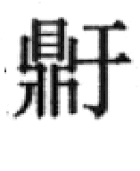”“”与“镬”古音相通，故此类鼎实为自铭为镬的大鼎。［14］《淮南子·说山训》高诱注说：“有足曰鼎，无足曰镬。”所说乃是汉制，汉后灶台普及，鼎足成为多余，煮牲只需大釜（或称镬）即可，故有以镬无足即釜属之说。在汉代画像石上，也可以看到这种巨釜正坐在吐着火焰的灶台或篝火上。第二类鼎是设食鼎，或曰正鼎，有的学者命名为升鼎。其主要功用，是盛放镬鼎煮熟的肉食。《周礼·天官·亨人》说：“掌共鼎镬，以给水火之齐。”郑玄注：“镬所以煮肉及鱼、腊之器，既熟，乃脀于鼎，齐多少之量。”［15］脀即将牲体放入正鼎之意，所以蔡侯墓出土的这类鼎自铭为“”。第三类鼎是羞鼎，又称陪鼎。《周礼·天官·庖人》云：“与其荐羞之物。”郑玄注：“备品物曰荐，致滋味乃为羞。”［16］简言之，羞就是滋味鲜美的调味羹。它是用牲及禽兽肉为主料制成的。镬肉及盛到正鼎内的肉是无滋味的，所以食用时还需要以羞鼎内的羞味调和裹汁。以上三类鼎，不同地位的贵族有不同的组合制度。笼统地说，统治者地位越高，用鼎规格就越高。如前所述：天子用九鼎，配镬鼎七、羞鼎三。诸侯、大夫、士各级减损不一。从考古发掘实况来看，虽未尽与载籍相合，如曾侯乙用天子制，九鼎，所配镬鼎仅二。但其大的原则还是可以肯定的。在鼎的形制方面，晚商周初大体近似。1959年湖南宁乡出土的人面纹铜方鼎，是商晚期的珍品。（图24—8之2）西周晚期至春秋，多为圆底、附耳、蹄足。晋国率先创制新款式的铜器，导致春秋晚期鼎式的多样化。如三晋多矮足扁圆鼎，而南方多高足鼎等等。战国中期以后，普遍兴用素面附耳鼎，直至秦汉。
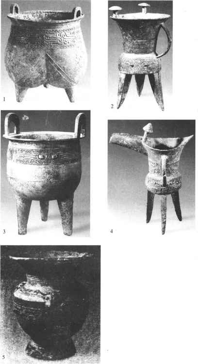
图24-7 郑州商城出土商代早期铜礼器
（1．鬲，2．斝，3．鼎，4．爵，5．尊）
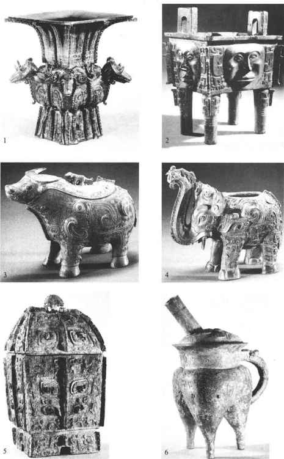
图24-8 商代晚期铜礼器
（1．四羊方尊，2．人面方鼎，3．牛尊，4．象尊，5．方彝，6．封口盉）
鬲 圆颈大口，三足中空，与腹连为一体，称为袋足，或称款足。这种结构可增大受火面积，使食物速熟。足尖多成乳头状。主要用途是煮粥。在新石器时代，即已出现了陶鬲，或有柄，或有耳，或有盖。商周出现铜鬲，并逐渐进入了礼器行列。（图24—7之1）其间，三个袋足日趋萎缩，整个形体变矮，并有较宽的唇沿。作为礼器的鬲，在使用时，与鼎有一定的组合关系。如2、4、6个鬲，每与5、7个鼎相配。8个鬲，每与9个鼎相配。西周时，还有个别的方鬲，已非袋足的形制了。鬲身上下隔开，下层为火室，并有火门，可以开关。过去有的古鬲流入美国，如“季良”铜方鬲，底下还有四兽作器足。20世纪70年代，陕西扶风庄白窖藏又出土一件西周时的方鬲，其火门有一刖足阍奴把守。（图24—5）随着鬲的日用化，鬲的数量一度增多，袋足亦复隆硕，但至战国晚期便趋于消亡了。
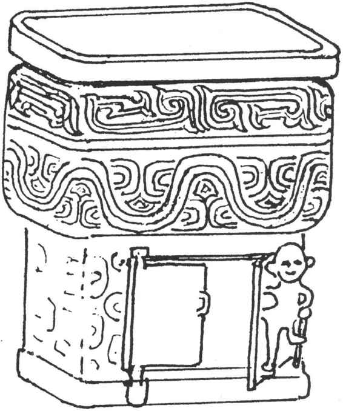
图24-5 陕西扶风出土的刖足阍奴方鬲
甗 上部为甑，下部为鬲，或分体，或浑体，是两者结合的一种蒸食器。多为圆形、立耳，少数为方形。甗的主要用途是蒸饭，下部煮水，蒸气通过中间的箄孔将上部的米蒸熟。所以《陈公子甗》铭曰：“用征用行，用羹稻梁。”浑体箄的箄子每有一小鼻钮，与箄的内壁关联，使箄子可以开合。1923年河南新郑出土的一件方甗，上下分体，上部中间立有一道直隔，将其分为二室，因而可以一次蒸熟两种米饭。新石器时代的陶箄，甑部较大，鬲部较小，惟山东胶县三里河所出陶甗相反，且无明显的袋腹。商周之际的铜甗，甑部降低，从结构上讲，大体是西周多浑体，东周多分体。但商代也有分体甗，如妇好墓所出之“妇好”甗。甎主要为日用器，亦兼作礼器，并与鼎、簋、盘、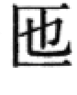等配合。20世纪30年代，寿县朱家集楚墓出土一组大型铜甗，每个均一米多高，是罕见的特例。妇好墓所出三联甗，三个铜甑坐在一个长方形的“鬲”上，可同时蒸三甑或三种饭。该器形大式新，是为仅见。（图24—6）
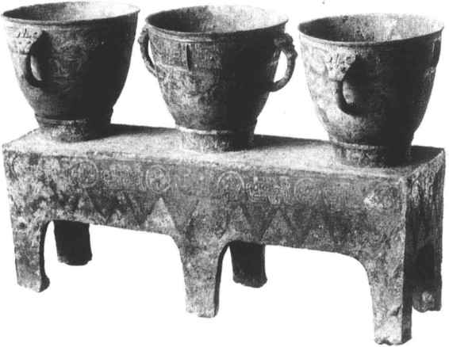
图24-6 商代的三联铜甗
设食器
簋 圆形似碗，敞口、凹圜颈、圆腹、圈足。或无耳，或双耳，或三耳，或四耳，或带方座，或带支足。簋的主要用途是盛黍、稷、稻、粱等熟饭，相当于后世的大饭碗。公元前4000—前3000年的大溪文化遗址所出陶簋为敛口，带有原始特征。郑州二里冈和黄陂盘龙城出土的铜簋，是目前发现的最早的铜簋，同样也带有原始的体征。至商晚期，簋形渐趋固定。总之，早期的铜簋无耳、大口，晚商以后的铜簋多双耳、敞口。西周早期的铜簋多带方座，敞口渐有收缩趋向。继后，双耳出现了珥—耳下端所垂之板状饰物。西周中晚期又有四珥立足簋，及高圈足簋或圈足下附小兽支足的簋，且器口多弇。同时方座簋依然行用，（图24—9之2）直至消亡。目前已知最大的铜簋，是1978年陕西扶风出土的周厉王的簋，重60公斤。说明它纯粹是一种礼器，根本无法实用。簋作为礼器，以偶数组合。天子8簋，诸侯6簋，大夫4簋，士2簋，分别与一定数量的鼎、鬲等各种礼器相配。簋，又写作“ ”。
”。
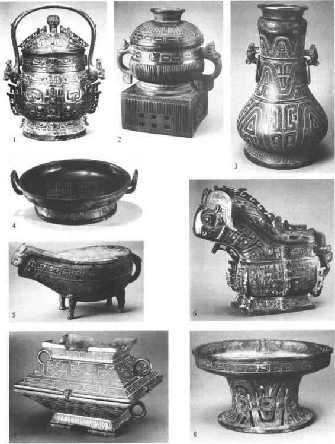
图24-9 西周铜礼器
（1．提梁卣，2．方座簋，3．壶，4．盘，5．匜，6．觥，7．簠，8．豆）
簠 侈口，长方形，由大小、纹饰相同的盖、身两部分组成。盖、身均为长方形的平顶和平底，四面斜坡至于器口，有些器口外沿铸小兽或子母口，使盖、身吻合，并由此可分出盖、身。簠或无耳，或双耳。双耳者，即盖、身各铸双耳。器顶和底均有圈沿，在身则为圈足、其四角有矩形短足。在盖则为捉手。（图24—9之7）簠的用途与簋同。簠、簋既同为盛食奉神之器，须整洁，故古人将“簠簋不饬”当做指责为官不廉的婉辞（见《汉书·贾谊传》）。簠出现于西周，盛行于西周中、晚期，终于战国。早期簠一般体卑足低，晚期簠则体隆足高。
敛口，椭方形，有盖，以耳，圈足或再加四短足或四立兽为支足。盖上捉手的形制一般与器足相同，只是要小许多。是簠、簋结合的产物，其用途同于簠簋，所以有的自铭为“簋”。出现于西周中期，至春秋以后即从礼器中消失。使用时以偶数组合，与其他礼器相配。
敦 大口，圆腹，二环耳，三短足。盖与身多对称，合盖则成球形。俗称“西瓜鼎”。但也有少数的敦，无耳、无足。或长细蹄足，或盖小于身，或呈扁圆形。敦的用途与簋相同，而且逐渐取代了簋的地位。敦兴于春秋，盛于战国。
豆 上为圆盘或碗形盘，高圈足，或高柄圈足，或有盖。柄的专名称校，圈足的专名称镫。（图24—9之8）豆本用以盛黍稷之类，约自西周即用盛菹醢（酸菜及肉酱）。所以《周礼·天官·醢人》说：“醢人，掌四豆之实。”新石器时代的仰韶文化遗址中，即已出现陶豆，只是形制古朴，盘或析腹，无明显的柄。以后的陶豆出现高柄、浅盘者，与高圈足者并行。山西保德出土的商代晚期铜豆是目前所见最早的铜豆，山东长清出土的铜豆，大圈足，盘腹较深。西周时期，如长江流域出土的釉陶豆，大貌与前者相近，但有的豆盘则为敛口。春秋战国时期，无论是铜礼器或陶礼器的豆都十分盛行。一般盘腹加深，形似小碗，而且高柄、有盖，甚至有的柄极高。战国燕下都（今河北易县东南）出土的圆柄方豆、江陵雨台山楚墓出土的鸳鸯漆豆，都有很高的艺术价值。
笾 似豆而盘平浅、沿直、矮圈足。《周礼·天官·笾人》说：“掌四笾之实”，《仪礼·特牲馈食礼》云：“祝命彻阼俎、豆、笾。”可见笾与豆有别。《尔雅·释器》说：“竹豆谓之笾”，是知笾是从豆分化出来的。但笾也像豆一样，既有竹编，又有木制、陶制和铜制的多种。此类器物或自铭“铺”及“簠”，学者或以此为之定名。“铺”与“笾”古音相通，故二者实乃同一器物，只是由于质地不同而产生了上述的区别字。笾的用途是盛果脯之类的食品。
大型盛饭器
盂 侈口、深腹、附耳、圈足，形体较大。是过渡性的盛饭器。相当于后世的大饭盆。甗内（或甑内）的饭熟之后，先盛到盂内，然后再分盛到簋、簠之类的食器里。辽宁喀左出土匮侯盂自铭“匽侯作盂”，即蒸熟的饭，“ 盂”自是盛熟饭之器。新石器时代的磁山文化遗址（公元前5000多年），曾出土过陶盂，但形制与上述铜盂不甚相同：其口大、体椭圆，无圈足、无附耳，或深腹、或浅腹。可能不限于盛饭，还用于盛水。即或铜盂也兼盛水。如《韩非子·外储说》引孔子语：“盂方水方，盂圆水圆。”又形似而体小者，亦称盂。如《史记·滑稽列传》说道：“操一豚蹄、酒一盂。”可知汉代有偶用盂盛酒者，但已发生了蜕变。商周铜盂，先是逐渐增大，后则衰落。汉后变成另一形制，多小而浅腹，质地也多有不同，并从食器中消失，成为一般器皿，如水盂之类。
盂”自是盛熟饭之器。新石器时代的磁山文化遗址（公元前5000多年），曾出土过陶盂，但形制与上述铜盂不甚相同：其口大、体椭圆，无圈足、无附耳，或深腹、或浅腹。可能不限于盛饭，还用于盛水。即或铜盂也兼盛水。如《韩非子·外储说》引孔子语：“盂方水方，盂圆水圆。”又形似而体小者，亦称盂。如《史记·滑稽列传》说道：“操一豚蹄、酒一盂。”可知汉代有偶用盂盛酒者，但已发生了蜕变。商周铜盂，先是逐渐增大，后则衰落。汉后变成另一形制，多小而浅腹，质地也多有不同，并从食器中消失，成为一般器皿，如水盂之类。
案具
俎 形似小凳，上横长方形板面，中央微凹，横板下两端有立足。1979年辽宁义县窖藏出土的商代铜俎，周沿斜侈，立板式的俎足，俎的腹下悬有二枚铜铃，俎身饰有兽面纹。俎是用于切熟肉的砧板。孔子7岁时，就从其母学习“陈俎豆、设礼容”，可见俎这种礼器的使用也颇有讲究。同时俎也用于日常就餐。俎除铜制外，还有用漆木制成的。《史记·项羽本纪》中说：“如今人方为刀俎，我为鱼肉”，就是以俎、肉拟人事的一个比喻。山东高唐出土的庖厨俑，展现了古人使用刀俎的情形。
酒器
酒器中又可分为盛酒、温酒、调酒、饮酒诸器种。
盛酒器
尊 一般为侈口，高颈，鼓腹或筒腹，圈足。（图24—7之5）在礼器中的地位仅次于鼎。在新石器时代就出现了陶尊，形制则为大口或兼尖底。山东大汶口文化遗址中一些为人注目的刻画符号，就是刻在大口尊上的。这种尊可能是用来酿酒的。商代以后的铜尊，则为盛酒器。在郑州铭功路和黄陂盘龙城商代中期的遗址中，出土了我国目前已知最早的釉陶尊。这种釉陶尊，主要为敞口、折肩、深腹、凹底的形制，个别已有圈足的，商末周初还有一种特大侈口、筒状的尊，学者或称之为“觚形尊”。西周中期的尊，有体卑、短颈、垂腹的特点。此外，有的尊或有盖，或有鋬（把手），或方形，或圆口方体，不一而足。著名的四羊尊，就是方尊的优秀代表。（图24—8之1）战国早期的曾侯乙墓，曾出土一件尊盘，尊立于盘上，二者合为一体，尊的口、腹及盘的周身，均有极其繁缛的透雕纹饰，它不仅造型精美，而且是我国早在公元前5世纪即掌握了熔模技术的确证。还有一种形制更特殊的鸟兽形尊，即尊的整体为一立体的鸟兽形状，有盖、有流，且盖、流处理极巧妙。如夔纹象尊的口盖，设于象背，而盖纽又是一只小象，形成大象驮小象的艺术造型，十分生动。（图24—8之4，照片中盖失。）此外，还有鸟尊、鸮尊、驹尊、犀尊、羊尊、虎尊、牛尊，（图24—8之3）不胜枚举。尊又是酒礼器的通名，所以有些礼器，常自铭为“尊彝”。
壶 一般为小口，有盖，长颈，圆腹，圈足，贯耳。（图24—9之3）用于盛酒，或兼盛水。《诗·大雅·韩奕》云：“显父饯之，清酒百壶。”《孟子·梁惠王下》：“箪食壶浆（指酒），以迎王师。”这些记载都可证明壶是酒器。而《仪礼·特牲馈食礼》：“壶濯及豆笾”，又证明它兼或盛水。壶的出现很早，新石器时代的磁山文化以及与其大致同时的裴李冈文化遗址都已有了陶壶。不过后者所出的陶壶形体较矮，与罐近似。仰韶时期的陶壶，则与瓶近似。以后的陶壶是商代铜壶的雏形。商晚时期还盛行一种椭圆形、宽口、垂腹的壶，有的还有提链，形体较大。西周中、晚期又出现了方壶。使用时，常以一方壶与一圆壶相配。春秋时期的莲鹤方壶，形体高大（高约122cm），壶身饰以蟠曲龙纹，有两个镂孔龙形大耳，圈足下伏有双兽。壶盖四周有莲瓣两层，盖中央立一振翼长鸣之鹤。此壶构思精美，一改商周以来礼器的庄重、静止风格，体现了春秋大变革时代的社会风貌。春秋战国时期的壶，形态繁多，纹饰亦趋写实。其中有瓠形壶、八棱壶、扁壶等，前二者当是模仿匏器造型，并且是返璞归真的作品。因为匏实是壶的原型。河北平山中山王墓出土的圆壶和扁壶中还保存了战国时期的酒。1935年河南汲县山彪镇出土的铜鉴及1965年成都百花潭出土的圆铜壶都镶嵌宴乐水陆攻战纹壶，描绘了战国时期贵族宴乐和水陆战争的场景。汉时，壶又有变化，面多平素，圆者专名为钟，而方者则专名为钫，成为生活日用器物。
罍 有高、扁两类，高者小敞口，短颈，广肩，削腹，圈足。口上有盖，肩有兽耳衔环，下腹前有鼻，鼻多作牛首形。扁者大口，广肩，圆鼓腹，高圈足，口亦有盖，肩有兽形耳，但常无环。罍为大型盛酒器，也用于盛水。《诗·周南·卷耳》说：“我姑酌彼金罍。”又《仪礼·少牢馈食礼》载：“司宫设罍水于洗东。”可以为证。罍多作生活用器，也有时作礼器用。《礼记·礼器》云：“庙堂之上，罍尊在阼，牺尊在西。”阼指东阶。罍可能是从陶罐分化出来的一种容器，形体大，容量多，如使用时，当是礼仪中的第一道酒具，即先要将罍中的酒分注于尊内，然后再用勺、枓挹入爵、觥等酒器。所以《诗·小雅·蓼莪》说：“瓶之罄矣，维罍之耻。”瓶即包举尊在内。罍流行于商周，时间较短，战国虽有发现，数量不多。当罍衰之时，壶便盛行起来。除前述圆罍之外，还有少数的方罍。
缶 敛口，短颈或无颈，广肩，圆腹，足平底，有盖及环耳或链耳。少数缶或为方形。初为陶制，后有铜制品，或充作礼器。《礼记·礼器》说：“五献之尊，门外缶，门内壶。”缶也是大型容酒器，兼用盛水。缶主要见于春秋战国时期。著名的“栾书缶”，上有错金铭文，是晋执政大夫栾书为祭祀其祖先所作之器。1955年蔡侯墓出土的4件缶自铭“盥缶”，是为水器。而另外2件自铭为“尊缶”，则为酒器。
还有一种自铭为的酒器，形与罐缶相近，水平底。如“国差”，其铭曰：“用实旨酒。”再如、瓿，多作实用器物，概不备述。此外，尚有如下一些中等盛酒器。
方彝 方口，方盖，方腹，或微鼓，方圈足。盖似四面坡的屋顶，盖上有柱钮或屋顶状钮。（图24—8之5）还有的方彝，铸有附耳。彝本青铜礼器的通名，因上述形制的酒礼器没有确切的名称，后人遂以方彝名之。方彝出现于商代晚期，腹壁较直，商周之际则腹壁外鼓。殷墟妇好墓曾出土一件巨型两器联体的彝，名为偶方彝。西周师遽方彝的腹内，有一直隔，将彝腹纵分为二，一器可盛两种酒。方彝多有繁缛纹饰，与觥及鸟兽形尊都是酒器中的豪华礼器。方彝自西周中期以后，即不常用。
卣 一般为小口，有盖，长颈，椭圆鼓腹，圈足，有提梁，挂于两肩。卣的体形近似扁壶。（图24—9之1）因卣为中等盛酒器，最高统治者常用盛着酒的卣赏赐给有功的贵族。金文中每见赐品中有“矩鬯一卣”的话。卣出现于商代晚期，初形较圆，商周之际盛行，多为大口，形扁，腹下垂。卣也有方形、直筒形、鸟兽形等。早年出土于湖南安化的虎食人卣，即是十分著名并受到学者热议的兽形铜卣。约在西周末，卣在礼器中即不常见。河南信阳蟒张乡商代墓葬出土的铜卣中，保存了目前所知我国最早的酒。湖南湘潭荆州乡出土的鼍龙纹提梁铜卣是目前所见最大的铜卣。
觥 椭口带流，有盖，椭圆腹或方腹，圈足或四足，有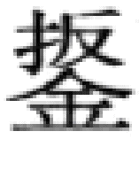。盖多作兽形。（图24—9之6）去盖后，形似后世带流有把的漱口盂。有的还附带小勺。觥屡见于典籍。《诗·周南·卷耳》说：“我姑酌彼兕觥”，可见觥主要为盛酒器，或兼用于饮酒。觥的形制另有作牛角状者。山西石楼桃花庄曾出土一件觥，形体近于龙形，并饰有龙、蛇、蜥蜴等纹样，但整体轮廓仍似牛角。此觥为商晚期物，表明它保留着觥的原型——牛角。觥盛行于晚商及西周前期，西周后期消亡。觥或写作觵。
温酒器
爵 口、颈浑一，口侈而狭长，前为流，后为尾。流的根部有两个立柱，柱顶圆帽。也有的两个立柱向中靠拢，合成单柱，圆腹，凸圜底，三只棱锥足，腹侧有鋬。（图24—7之2）爵的形制多样，除上述最常见者，有方腹四足的，带盖的，无柱的，或柱自颈部附出的。爵是用于温酒的，所以其底或留有烟炱。晚期的爵，底烟少见，说明爵后来转向温酒与饮酒混用，甚或多用为饮酒器。爵最初可能模仿了雀的形状。春秋时期，有的爵就做成雀形。铜爵是从陶爵发展而来的。目前发现最早的铜爵是偃师二里头遗址出土的，它也是已发现的最早的青铜礼器。其形态与二里头的陶爵很近似，但制作规整，壁厚均匀。商代早期的爵，器身与足明显分段，流短而狭，无柱，腹底平。晚期，凸圜底的爵盛行，流长而宽于早期制品，多有柱。（图24—10）属于商代晚期的爵最多，到西周晚期，爵渐渐消失，被实用、便利的杯子所代替。
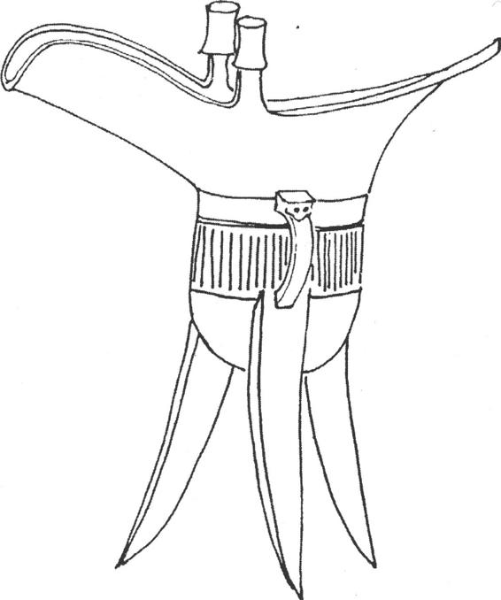
图24-10 商代双柱铜爵
角 与爵相似，但口上无柱，无流，两端皆如爵尾，呈锐长的角状。腹侧有銴。《礼记·礼器》云：“宗庙之祭……尊者举觯，卑者举角。”可见角为饮酒之器，但它主要用于温酒。现今出土的角不多，它主要流行于商周之际。需要指出的是，以上所谓角，是传统的说法，今姑沿袭之。有一种酒器形同一只牛角，角根处为器口，有盖。在30年代的殷墟发掘及1953年江苏丹徒西周墓的发掘中，均有这种角出土。容庚先生曾推断：“上述的角或是爵的变形，而此角方是真角。”此说是很有道理的。
斝 与爵相似，但形体大，正圆形，侈口，口上无流无尾，口缘有双柱，体侧有銴。其足或为袋足，或为实足，或为棱锥足。（图24—7之2）斝主要用于温酒，在公元前二三千年就已出现了陶斝，如属于龙山文化庙底沟二期的遗存中，就发现了很多。不过陶斝的口沿上一般没有立柱，而为侈口、大颈，以至有的颈特大，形成所谓束腰斝。这直接影响了早期铜斝颈、腰分段的形制。晚商的铜斝则无明显的分段。商周之际斝的形体短粗，多为蹄足。铜斝中个别有四足的。古籍中，礼器有所谓“散”，实即斝。
调酒器
盉 一般为弇口（口小腹大），封顶或设活盖，大腹，管状流，大鋬，三或四个袋状足。（图24—8之6）四足者则为分裆，形体近方。盉的用途原不明了，王国维作《说盉》，［17］始论证为调酒之器。即用以调兑水与酒的浓淡，然后注入爵等酒器中备用。盉或兼用以温酒。陶盉出现得很早，如在河姆渡文化（前5000—前3000）晚期遗址中，就有垂腹式陶盉出土。在良渚文化（前3000—前2000）遗存中有了柱足的陶盉。最早的铜盉，发现于二里头早商遗址中。一般来说，较早的盉多封顶，后侧开小口，前有仰首管状流，袋足。殷墟妇好墓中也有盉出土。方盉的形状结构，也大体如此。商代晚期主要流行圆腹盉，流在前腹靠上。西周初还有方盉流行，继而有圈足及短足的盉，以后渐衰。
饮酒器
觚 大侈口，细腰，高圈足，饮酒之器。在商代以前即有陶觚，如二里头早期遗存中，有盉、爵、觚的组合。考古所见商代最简单或最基本的酒器组合，也是爵与觚。陶觚的形状为小侈口，腰粗而短、平底，商代早期的铜觚也大体如此。商代晚期的觚变为大侈口，腰细短。觚也有方形的。西周中期以后，觚和相关的某些酒器一起衰落了。
觯 侈口，短颈，鼓腹，圈足，或有盖，形似尊而小。多为椭圆形或圆形，个别有方形的，自铭为“饮壶”，或另立一类。觯为饮酒器，其用途与觚同。相传晋臣杜蒉曾以举觯罚饮的方式，规谏平公遵守礼制，平公乃命该觯为“杜举”。陶觯出现于公元前3000多年，铜觯盛行于商及周初，在春秋时期罕见，或自铭为或耑，如所谓义楚三耑。近代学者王国维作《释觯、觛、厄、 、》，谓“此五字同声，亦当为同物”［18］。
、》，谓“此五字同声，亦当为同物”［18］。
承尊器
禁 长方体，中空，有的上面平素，有的上面有椭圆口三，以承尊、卣之类的礼器，器身前后及左右均有繁缛纹饰或相应数目的长方孔。又有作正方体者，上承一器，如器铭所自称的鼎卣、告田觥所附的器座，容庚先生认为“也应名之为禁”［19］。禁的用途，已见上述。又据《仪礼·士冠礼》：“尊于房户之间，两甒有禁。”郑玄注：“禁，承尊之器也。名之为禁者，因为酒戒也。”长方形的禁发现极少，除外流美国的一件，还有一件藏于天津历史博物馆，均为西周初年之器。1979年河南淅川春秋楚墓出土了一件铸造精美的铜禁，饰有镂空多层云纹，四周攀附12只虎，又以10只虎作为支足，是件罕见的国宝。
水器
鉴 大口，圆腹，口沿下有二或四个兽耳，平底。有的鉴作方形。鉴是盛水鉴容之器，故鉴的古文字即为人立水器之侧，俯首照容之形。巨型的鉴，也用于沐浴。《庄子·则阳》说道：“灵公有妻三人，同滥而浴。”滥即鉴。鉴又可盛冰，用以防暑降温或冷藏食物，即《周礼·天官·凌人》所谓的“冰鉴”。鉴盛行于春秋、战国时期。吴王光鉴是吴王光嫁女儿的陪嫁，为春秋时期的著名器物。河南汲县山彪镇魏墓出土的一对水陆攻战纹鉴，以其精美、生动的水陆两栖战斗的图像而为世人所重。湖北随县曾侯乙墓出土一对冰鉴，鉴呈方形，中央有一方壶，壶与鉴壁之间可以容冰，同出的还有二只长柄斗。显然，这是曾侯的一套“冷饮器”。
盘 大口，直沿，浅腹，双耳或无耳。平底，圈足或三支足。（图24—9之4）个别的盘也有长方形的，还有的盘带流。盘是盥器，用时需与匝配合。《礼记·内则》说：“请沃盥。”沃者，水自上浇之；盥者，手受水而下流于盘。古人吃饭用手抓，食前先要净手，上引《内则》所述，即以 浇水，供洗手之用，而流下的污水则用盘接受。在公元前二三千年的新石器时代便有圈足陶盘，但尚未有
浇水，供洗手之用，而流下的污水则用盘接受。在公元前二三千年的新石器时代便有圈足陶盘，但尚未有 的发现。商代及周初也仅发现有铜盘，这时可能已以盉或其他水器代
的发现。商代及周初也仅发现有铜盘，这时可能已以盉或其他水器代 ，所以有的学者把盉归为水器类。同时沃盥之制也可能尚未臻于正规化。西周以后，盘、
，所以有的学者把盉归为水器类。同时沃盥之制也可能尚未臻于正规化。西周以后，盘、 配用的礼制才确定下来，而春秋、战国时期尤其盛行，且常有与其功用相关的鱼、龙等纹饰。盘有特大的，如虢季子白盘，呈长方形，长达150厘米，除了盛水当可用于沐浴。
配用的礼制才确定下来，而春秋、战国时期尤其盛行，且常有与其功用相关的鱼、龙等纹饰。盘有特大的，如虢季子白盘，呈长方形，长达150厘米，除了盛水当可用于沐浴。
 椭圆形，敞口，长流，龙形銴，有四足、三足或无足。（图24—9之5）
椭圆形，敞口，长流，龙形銴，有四足、三足或无足。（图24—9之5） 为盥手之注水器，其用法已见前述。《左传·僖公二十三年》有“奉沃盥”的记载，即说明之使用情形。
为盥手之注水器，其用法已见前述。《左传·僖公二十三年》有“奉沃盥”的记载，即说明之使用情形。 出现较晚，西周中期始见，春秋、战国时期盛行。春秋时，
出现较晚，西周中期始见，春秋、战国时期盛行。春秋时， 的流常做兽首形，注水之时，水出其口。个别的
的流常做兽首形，注水之时，水出其口。个别的 有盖。还有的将四足做成车轮。
有盖。还有的将四足做成车轮。
以上所介绍的是一些主要的礼器，有些少见或行用时间很短的，一概从略。下面再谈一下乐器。乐器与礼器的关系。礼器是否包括乐器，历来学者间有不同意见，但都承认某些乐器是为礼制服务的。“礼非乐不履”，奴隶主贵族的各种礼仪，需要音乐的配合。例如钟，除用于军乐及“钟鸣鼎食”的宴乐之外，还有的用于祭祀、铭功、祈福等，足见这部分钟本身即具有礼器的性质。钟体呈扁圆形，上有柄，钟口两端尖角下垂。钟的正常的放置状态为口朝下，与在它们之前出现的同类铙或钲相反，它凭借柄的环悬挂在钟架上。钟架的专名为，钟本身也有一套名称制度。如钟的柄称作甬，钟口两角称为铣等。这种钟称甬钟。另有以纽代甬的钟，称纽钟，还有一种钟的口是平的，称为镈。前两种钟可依音阶编列，称为编钟。镈一般独立使用，故称为特钟。编镈虽有，较少见。钟最早见于西周中期，初为二三枚一组，一枚钟一般都能奏出双音。以后渐多起来，战国曾侯乙编钟多至64枚。这套编钟的音域达五个八度，充分显示了我国古代音乐的伟大成就。
还有一种似钟而比钟小的铃。桥形纽。《周礼·春官·巾车》说：“大祭祀，鸣铃以应鸡人。”可知铃也用于祭礼。
于，是一种打击乐器，圆筒形，上大下小，头似椎，中空，顶上有纽，以便悬挂。除作军乐，也用于祭典。云南晋宁石寨山出土的贮贝器盖上，铸有用人牲祭祀的群雕，其中即有击奏于的形象。
即便是如人们熟悉的鼓，也有同钟大体相同的用场。古代的鼓有单面、双面之别，又有陶框（鼓邦）、木框及蟒皮、鼍皮、牛皮等鼓面的不同。商代还有通体皆以铜铸的铜鼓，其形制为双面、横置，上有鸟饰，下有四足，1977年湖北崇阳出土的铜鼓为矩形足，或称为矩形鼓座。南方少数民族地区的铜鼓，其形迥异。单面，束腰、中空，腰间有耳，可以侧悬击奏。
至于兵器，自然用于战争及格斗，但也有的脱离了实战的意义，而主要体现权威或服务于礼仪。本章第一节已说到玉钺的出现，武王伐商时则“左仗黄钺，右秉白旄以麾”［20］。黄钺即以黄金为饰的铜钺，为帝王专用。后世帝王又将它颁赐将帅以主征伐。钺或用为仪仗，作权力的象征。武王灭商后行社祭，“周公把大钺，毕公把小钺，以夹武王”［21］。
二、日用器物类举及演化
古代日用器物中，有关饮食、盥洗等方面的器物，凡上文已述及者，以及属于建筑、居室、家具、服饰、交通等另有专题论述的器物，一概从略。
灶具
人类最早的“灶具”，就是一个火堆，再进一步就是火炕或火塘，实际是无“灶具”可言。直至人类发明了固化的容器之后，这时才有了用三块或多块石块围拢起来的“灶”。以后逐渐发明了高出地面的土灶，又有了陶灶、铜铁炉灶、砖灶等，有些灶的形制或结构一直流传或影响到今天。
陶灶 出现于新石器时代，河南陕县庙底沟曾出土多件，有的灶上还坐着陶釜。其形制为圆形，敞口卷沿，有壁，前脸开口以便填柴，有底，下承三支足。这些陶灶的时代为公元前三四千年。从晚于上述遗址1000年的龙山文化庙底沟二期遗址中出土的陶灶，已有了显著的变化。这时的灶呈筒形，上体微鼓、下体收分，敞口，无底，底部开填柴口，而上端近沿处开有四个烟火孔。在山西襄汾陶寺类型的龙山文化遗址，出土了釜灶一体的陶灶，在灶的上端也开了烟火孔。无疑这对加强火力和加速烹饪是极有利的。在此之前的仰韶文化遗址中，曾有双联灶炕，即在前炕填柴、进风，后炕烹食，这在当时是相当先进的。而到了陶寺遗址的时代，人们对于利用烟火孔道，增强燃料火力的技术，有了极大的提高。至于陶寺出土的陶釜灶的结构之妙，是不言而喻的。原始社会发明的这种炉灶，一直影响到周代，当时有所谓煁或烓。《诗·小雅·白华》：“樵彼桑薪，卬烘于煁。”《尔雅·释言》：“煁，烓也。”《说文》：“烓，行灶也。”行灶就是可以移动的灶。所以朱骏声在《说文通训定声》“煁”下解释说：“行灶之名，如今之风炉。”［22］陆羽《茶经》云：“风炉以铜铁铸之，如古鼎形。”这是用后世器物状喻古器以便于理解。古代之煁，未必都是铜铁所铸。所以《茶经》又指出“其炉或炼铁为之，或运泥为之”。唐白居易《舟行》诗云：“船头有行灶，炊稻烹红鲤。”［23］可见行灶用于舟船行旅之情形，其方便可想而知。
砖、土灶 原始社会末期的齐家文化遗址（前2000年左右），出现有高出地面的土灶。在石家庄战国村落遗址，曾发现有台式土灶。春秋、战国时期的灶注意通风、排烟。《吕氏春秋·谕大》篇有“灶突决，则火上焚栋”的记载。由于火力强，又为直突，故易失火。汉后台式砖、土灶极盛行，且将直突改为曲突，既拔火、又安全。（图24—11）汉代“曲突徙薪”的故事，已成人们熟知的典故。1956年内蒙古包头出土的东汉时期的黄釉陶灶，开有五个灶眼。这种多眼灶，即《汉书·五行志》所称之“都灶”。1958年山东高唐出土的东汉时期陶灶上，坐有釜、甑，后端斜立着一个弯曲的烟囱。1972年甘肃嘉峪关出土的画像砖，使我们看到了曹魏时期的厨炊，特别是当时人在有烟突的灶前烹饪的生动形象。由于古人对灶的重视，产生了灶神崇拜。《礼记·礼器》孔颖达疏：“颛顼氏有子曰黎，为祝融，祀以为灶神”，世代供奉。又由于古灶的发展，灶的各部位都有专名。如《广雅》卷七上《释宫》云，“其（灶）唇谓之陉，其窗谓之突，突下谓之甄”。
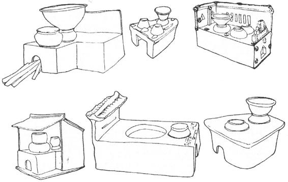
图24-11 汉代陶灶模型
铜、铁炉 春秋、战国流行铜炉，秦汉后流行铁炉。如曾侯乙墓出土的一种铜烹炉，形似双层盘，上层腹略深，有双环耳提梁，底有四只长足与下层炉盘相连，炉盘底有三只矮蹄足。实际上这是一种炉灶与烹锅相结合的烹炊器。这种结构特点一直影响到后世。出土时，上层“烹锅”里尚存有鱼骨，下层炉盘内则有木炭，但盘已烧裂变形。1963年江苏盐城出土东汉时的铁烹炉，其上层铁盘腹深如釜，宜于煮食。1958年贵州赫章县出土一件汉代的“武阳传舍铁炉”，上为炉体，下为承灰盘，炉体为圆筒形，周身有12个竖长方孔，炉底有四个曲尺形箅孔，炉口沿有三个撑爪，保障坐锅（釜）不会压火，而使火力更强。炉体两侧各有一环耳，以便搬动。此炉系驿传为旅客所备之烹饪用炉，至为便利。
镣炉 在小型泥炉的四周，框以木架，可自由移动。岳飞之孙岳珂作有《桯史》，书中对此有所记载。中国历史博物馆藏有一块宋代妇女切脍画像砖，图像中，在桌案前有一小火炉，火焰旺盛，炉上坐着锅。此炉即是所谓镣炉。
烹饪器
釜 因不同的时期或不同的质材，釜的形制有所不同。陕县庙底沟新石器时代文化遗址中出土的陶釜，呈扁圆形，中央鼓，上面开口，小沿。河姆渡文化遗址所出的陶釜，形体更为鼓圆，口更大，卷沿。以后有了铜釜、铁釜，其形态的发展日趋鼓圆，如1956年陕县后川出土战国时期的配套铁釜陶甑。1973年南昌出土东汉时期的带铁支架的铁釜。汉后的铜釜和甑多有衔环双耳。釜是古代民间使用最广的烹饪器，以至逃亡避难时也必负携而行。周太王亶父初居邠，“狄人攻之，仗策而去，百姓负釜、甑，逾梁山而国乎岐”［24］。釜亦军中必备炊器，所以项羽救巨鹿，“皆沉船，破釜甑”［25］，表示不胜必死的决心。
甑 形如罐或盆而底有孔，或箍以甑带，使其紧固。甑是蒸食器，用时需置于釜或鬲上，燃火后，釜、鬲内的蒸气通过甑底的孔，将甑内的饭蒸熟。在仰韶文化遗址中就发现了甑。属于龙山文化的河南下王岗遗址出土的陶甑，为双耳陶罐形，而山西陶寺遗址出土的陶甑腹壁下收成直线。商周至秦汉的青铜甑，常是分体甗的上部。甑的使用，延续了数千年。东汉时，范冉遭党祸，穷至绝粒，而志节不屈。闾里歌曰：“甑中生尘范史云（冉字史云），釜中生鱼范莱芜（冉曾任莱芜长）”。“甑尘釜鱼”遂成形容贫者断炊甚久的成语。
迅缶 外形似甑，而中央立一中空透底的汽柱，柱上端有花朵形汽孔。通过汽柱的蒸汽将器内食物蒸熟，实际就是今天的汽锅。殷墟妇好墓出土的一件青铜迅缶，双附耳，口沿上有凹槽，以便加盖。河南信阳楚墓曾出土一件陶质迅缶，因遣册内有“迅缶”之器名，商承祚先生认为即此空柱器皿，由此取名。
鍪 似釜而圆，圜底，敛口，反唇，双耳。是由釜发展而来的炊具，主要流行于战国、秦汉的秦人生活地区。四川新都出土的五件铜鍪（礼器），有三件单耳的，较少见。
锅 敞口，凹底，平沿。原始社会新石器时代即已出现。如仰韶文化大河村四期遗址出土大陶锅，湖北屈家岭也出土了特大陶锅。这当是氏族大家庭用的烹饪器具。
鬶 高颈，圆口，有流，三袋足，有銴。《说文》称之为“三足釜”，是煮粥、煮水之器。是大汶口文化和龙山文化的典型器物。有的鬶还做成动物形状，如山东胶县三里河出土的狗鬶、猪鬶，颇有趣味。在长江流域的新石器文化遗址中也有鬶的发现，以后渐渐衰落，直至绝迹。
炙子 形制多样，主要有箅条式、网式、漏孔式等，多有柄。早在公元前三四千年的马家浜文化遗址中，即出土了一件陶炙子，长方框，中有三条箅孔。当是烤鱼、烤肉时所用的。
斗或刁斗 一般为圆盘形，有长柄，或有流，有三足，主要用于军队加温熟食。《急就篇》黄笺及《一切经音义》等皆谓斗即刁斗，或谓无足者为刁斗，古人一般每日二餐，第二餐所食称飧或馂。飧即晚餐，义为早餐之余。樵斗或刁斗即加热飧或馂的炊器。当然在必要时也可用来煮食。它们的另一用途，是夜晚时用它打更巡夜。杜甫《夏夜叹》诗云：“竟夕击刁斗，喧声连万方。”
盛食器
箪 近似后世之竹篮，竹筐，用竹、苇编制。古人饭食，除蒸饭、煮粥外，还常做干粮，即将米、麦等谷物炒熟，或进而加工成粉，名之为“糗”，箪即盛糗之器。进食干粮时，自需就水，或以水调和，所以《论语》记载孔子称许颜回：“一箪食，一瓢饮……”古人又常以“箪食壶浆”描写群众对军队的欢迎。
餐具
碗 旧作盌或椀，敞口，深腹，小圈足，个别有平底的。《说文》说它是“小盂也”。其用途除进食、盛汤外，后世又有用茶碗饮茶的。碗在新石器时代各类文化遗址中均有发现，除陶质的以外，还有石质的，木质的。在河姆渡文化遗址中，发现了一件瓜菱形木胎漆碗，外髹朱红色生漆，是我国最早的髹漆制品。安徽屯溪西周墓中曾出土过原始瓷碗，在江苏丹徒、句容、金坛等地也有出土。湖北曾侯乙墓出土的金碗，有盖，环耳，三足，内附一镂孔金匕，是先秦罕见的金器珍品。汉墓出土的碗，大同小异。
杯 饮酒器，汉代做椭圆形，两侧突出两翼如耳，故名耳杯，又名羽觞。出土物极多，长径10—15厘米，漆木质最多，也有铜制者。还有一种染杯，经学者研究，当是盛作料酱的“调味碟”。
箸 即筷子。古人吃饭最初是用手抓。《礼记·曲礼》云：“共饭不泽手”，疏曰：“古之礼，饭不用箸，但用手。既与人共饭，手宜洁净，不得临食始捼莎手乃食。”但在商周时已有箸。《史记·十二诸侯年表》记载：“纣为象箸，而箕子唏。”不过那时的箸不用于吃饭，而是用于吃菜。因此《曲礼》又云：“羹之有菜者用荚，无菜不用荚。”郑注：“荚犹箸也。今人或谓箸为挟提。”其实荚、箸之别，仅在质地的不同而已。荚为木制，箸为竹制。其后箸渐兴，且用于吃饭。汉时箸已较普及，还产生了专门盛箸的器具，叫做筩或，是截取带节粗竹制成的。还有一种箸笼，叫做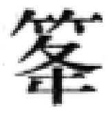，是以细竹编成的。筷子之名，约出现于宋代。《推篷痦语》云：“有讳恶字而呼为美字者，如立箸讳滞，呼为快子，今流传之久，至有士大夫直呼箸为筷子者。”
幂食器
《周礼·天官·幂人》云：“掌其中幂。”即负责用中幂覆盖食物，以保持食物清洁。民间也早有以布幂覆盖食物的习惯。后有食罩，以纸、布或纱等为之，也有竹制笼罩。唐宋盛行碧纱橱，主要是厨用。后来用于寝卧的纬幛也称碧纱橱。食罩则可用于宴席，每道菜上罩一个。
取火器
燧木 古代钻木取火，所用钻子及燧木，大小形制无定。后世又有用火刀、燧石击擦取火之法。新疆乌鲁木齐南山矿区的古墓葬中，出土大量的木片，上面还有不少的钻孔，即是战国至秦汉之际的燧木。《史记·孙子吴起列传》载：庞涓中了孙膑诱兵之计，追齐兵至马陵，见大树上有字迹，“乃钻火烛之……”。其取火之法，当即钻木，以易燃之引火物引燃之。唐代以后，有人发明了“引火奴”，以杉条染硫黄，一与火遇便引起燃烧。以后逐渐普及，改名叫“火寸”。
阳燧 铜质圆盘形，似镜而小，凹面，可聚阳光成焦。崔豹《古今注·杂注》说：“照物则影倒，向日则火生，以艾炷之则得火。”阳燧显系受到铜镜能反射阳光的启发，而逐渐发明的。因此古人又称之为鉴燧。至迟在公元前5—前4世纪，阳燧已经产生了。《周礼》、《淮南子》、《墨子》等典籍里都有记载。王充《论衡·乱龙》：“今伎道之家，铸阳燧取飞火于日。”阳燧的发明，在科技史上有着重要的意义。不过从文献及实物考察，阳燧很少用于人民的日常生活，所以出土实物不多，黑龙江省阿城曾出土两件，为宋、金时物。
照明器
烛炬 古代最初无蜡烛，燃柴枝束以照明，即所谓烛，也称炬（苣）。《周礼·秋官》有司烜氏，即专司取火、照明之事。据贾公彦疏，古之烛炬“以苇为中心，以布缠之，饴蜜灌之，若今蜡烛”。《仪礼·燕礼》疏也说：“古者无麻烛，而用荆燋。”约秦汉后，始以麻浸油为烛。司烜氏所供为“庭燎”，“庭燎”即立于庭中之大烛。但等级分明，天子百燎，公五十，侯伯子男三十。在室内夜晚待客也有讲究，要能做到“烛不见跋”，即烛炬燃烧不得现露其根，以示殷勤不懈之意。必要时，主人还要亲自“执烛抱燋”。至于侍者执烛则一律要坐在角落里，即所谓“隅坐”。炬又用于烽燧，夜有敌情则燃炬报警。1973年在内蒙古居延的汉代烽燧遗址中出土的炬，是用芨芨草捆束而成的。蜡烛约出现于东汉前后，魏晋时期已很流行。1983年，广州象冈山南越王墓出土了兽首形三插座烛台，青铜鎏金。在长沙、满城的汉墓中，曾出土蜡做的烛块。《晋书》和《世说新语》均记述了周嵩以燃烧的蜡烛投击其兄周颉，而觊依然神色无忤的故事。此时的蜡烛灯台也多有出土，如1957年福建建瓯出土的一件烛台，台座上由花盘上分出三支蜡烛座，座上又由花瓣烘托，造型甚美，其烛之精好可知。梁简文帝《对烛赋》云：“绿苣怀翠，朱蜡含丹。”［26］目前所见最早的蜡烛，是1983年在河南陕县的一座唐墓中出土的，共两支，圆柱状。较完整的一支，长45厘米，径5.5厘米。表面还绘有黑、绿两色的梅花图案，制作相当考究。
灯 上部作圆盘形，曰盏，盏内有钎，盘下有柱，柱下圈足，有的还带把。统治阶级还使用各种豪华的连枝灯、连盏灯以及有人物、动物等造型的灯具。《尔雅·释器》：“瓦豆谓之登”。注：“即膏登也”。最初的灯就是在陶豆中盛膏油燃捻，后来才分离出独立的灯。东周时期，灯具造型有很大发展，如河北平山战国中山王墓出土的十五连盏铜灯，高达84.5厘米，形似大树，分有15枝杈，枝上群猴嬉戏，枝端托出15个灯盏，灯座上有两人抛食逗猴，在结构上，主干由八节组成，有榫口，拆装方便，是一具组合式的华灯。与此灯同出的还有一盏银首人俑铜灯。人俑身穿绣袍，左手提二蛇，盘连二灯盏。右手高举一蛇，其顶连一灯盏。这枝战国中山国的银首人俑铜灯，人俑两手所捉之蛇，实即《西京杂记》所谓之蟠螭。汉代的中山王刘胜妻窦绾墓，出土了一件鎏金长信宫灯（图24—12），以宫女跪坐持灯，灯盏可以转动，灯罩可以开合，以调整光照的方位和亮度。宫女的右臂及身躯皆中空，燃烧的油烟可由臂进入体内，减轻室内污染，当时，民间的灯具也很普及，不过简陋得多，或仅为一灯碗而已。人们把对幸福的憧憬与灯光联系起来，视灯花为喜兆。汉代民谚曰：“灯花今夜开，明朝喜庆来。”随着瓷器的成熟，瓷灯也发展起来。如1958年南京三国吴墓出土一件青瓷熊灯，上刻“甘露元年五月造”。其形为熊踞于灯座内，头顶灯盏，两支前爪扶头，形象极为生动。隋唐时期制瓷业的繁荣，尤其是白瓷制造技术的精湛，为灯具品种的丰富和精美创造了前提，而黑釉，褐釉的出现，进一步推动了各色瓷灯在民间的普及。古代的灯笼，多以纸为罩，或以葛，富者以纱。南朝宋武帝尚节俭，“床头有土障，壁上挂葛灯笼、麻绳拂”［27］。约自唐代起，形成了上元灯节，其后历代灯彩，千姿百态，不一而足。后来又有蜡纸灯笼，透明度好，而且耐用。特别是至迟在宋代创造的“马骑灯”，俗称“走马灯”，利用燃气涡轮原理带动各种故事人物在灯内转动，颇有情趣。如南宋临安（今杭州）“灯品极多”，其中的“纱戏影灯，马骑人物旋转如飞”。［28］宋代范成大有诗咏之：“映光鱼隐见（原注：玻璃壶瓶贮水养鱼，以灯映之），转影骑纵横（原注：马骑灯）。”［29］至于灯烛所用膏油，初皆动物油脂，后乃用植物油。《楚辞·招魂》云：“兰膏明烛，华灯错些。”“兰膏”即用泽兰炼制的一种灯油。另外《汉书·地理志》记载说：“高奴，有洧水，可燃。”宋代沈括，将这种流出地面的可燃液体名之为“石油”。而明代曹昭的《格古要论》则明确地记载了陕北人民将石油炼成灯油，这是我国人民燃用煤油灯的滥觞。
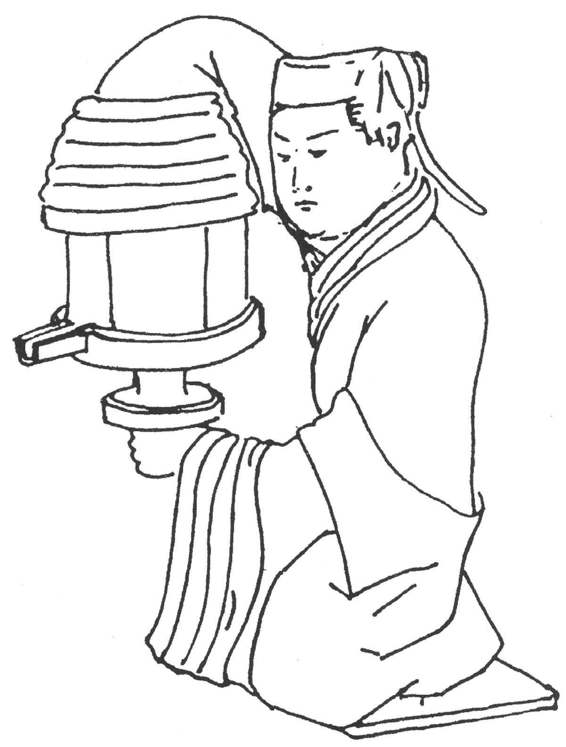
图24-12 河北满城窦绾墓出土长信宫灯
烛铗 灯烛之烛灰，往往需剪掉，免其阻燃，形似后世的胡桃夹子，唯夹头做相对薄刃状，手捏夹柄，双刃即可剪掉烛灰。
取暖器
炭炉 犹后世所谓炭火盆。圆盘或方盘，下承三兽足，或为圈底支足。盘两侧有链耳。此类炉以燃烧木炭供人取暖。出土实物很多，有的还残存着木炭。多为铜制，也有铁铸的。春秋时期的王子婴次炉，呈方形，炉盘底部残留着底足的断痕，可推知该炉原有斜柱式的圈足。1981年陕西茂陵无名冢出土一件铜暖炉，圆体、直壁，镂九竖孔。深腹、平底、蹄形高足。腹外壁有提链，这种炉极罕见。同时还出土一件铜暖手炉，也是罕见的暖手炉具。能笼于袖中之炉，名为“袖炉”。暖脚之炉，则名为“脚炉”。《香笺》注：“书斋中熏衣，炙手，对客常谈之具，如唐人所制漏孔罩盖漆古，可称清赏，新制有罩盖，方圆炉亦佳。”
帐具
帐构 古人设帐，或为游牧，或为军旅，或为帝王行宫，或为郊行宴饮，而且还每于室内张施于床，但大体有室外用帐及室内用帐两种。《周礼·天官·幕人》有：“掌帷、幕、幄、帟、绶之事”的记载，由此可知，大概两千多年前统治者已有一套用帐的制度。从现存的实物、壁画、画像砖等资料中，可以看到古代的各种帐篷。以室外帐言，河北平山战国中山国墓葬出土了武帐帐架及橛一套，还有皮帐及其构件一套。［30］其中一种帐顶铜构，形如蘑菇，圆顶四周有17个环。环上套有独脚钎子，用来固定帐顶皮带，顶足是一巨銎，可纳大帐的立杆。室内用帐构也有出土的，如河北满城中山王刘胜墓出土帐构有两套，一套鎏金，共102件，复原后为四阿顶长方形帐。长2.5米，进深1.5米，此帐是用于床上的。另一套帐构复原为四角攒尖顶的小形方帐，可在厅堂、露天张设。洛阳也出土过曹魏正始八年（247年）的铁帐构，复原为尖顶方帐。看到这些实物，便不难想象汉代大儒马融讲经“施绛纱帐，前授生徒，后列女乐”的情景了。［31］当然，不同级别的官吏以至平民百姓施帐，分别有着种种限制。
容饰器
梳篦 新石器时代的文化遗存中即发现了骨梳，晚期如山东大汶口文化遗址中出土过两件象牙梳，制作玲珑精致，有17齿。《周礼·考工记》有“（栉）人”（文佚）。《说文》曰：“栉，梳枇（篦）总名也。”可见古人对梳篦的重视，故统治者或有以梳理喻政治者。梳篦又有木、角、金属等质地的不同。梳之密者为篦，更利于去油污。头发稀疏者，不必用篦。杜甫诗云：“耳聋须画字，发短不胜篦。”［32］但梳篦不限于理发，且以理须，此类篦子称“篦刀子”，形似小刀；可随身携带。北宋时王晋卿派高俅向端王（后为徽宗）献“篦刀子”，高俅因此得与端王蹴鞠（踢球），从而飞黄腾达。梳或为妇女用作束发饰物。苏轼诗云：“山人醉后铁冠落，溪女笑时银栉低。”［33］
铜镜 多为圆形，也有菱花形、葵花形、八菱形、亚字形、盾形、方形等。镜面平光，用以鉴容。（图24—13）镜背有一纽，少数有2、3、4纽的，背地有各式纹饰。有的铜镜有柄，还有的铜镜很小，是随身携带的。时代最早的铜镜是1975年在甘肃广河齐家坪出土的一面素镜，和1976年青海贵南尕马台墓葬出土的七角星纹镜。这两面铜镜制造较粗糙，形体亦小，前者直径为6厘米，后者为8.9厘米。其时代为公元前2000年，皆属齐家文化。稍晚些的是1934年殷墟侯家庄1005号墓出土的一面平行线纹镜和1976年殷墟妇好墓出土的两面叶脉纹镜及两面多圈凸弦纹镜。经西周、春秋，铜镜在战国时期得到长足的发展，创造了铜镜的新风格，不仅造型美观，纹饰也丰富多彩。汉镜较厚重，钮多为半球形、开始出现铭文，并渐趋繁复。汉镜中最精美的是一种搏局镜，旧称规矩镜。1979年山东淄博出土的一面西汉连弧蟠螭纹大长方镜，长达1.15米，宽为57.7厘米。四角及中心共有五个钮。背饰一长龙穿行于云气之中。是目前已知我国古代最大的铜镜，汉至两晋南北朝铜镜多浮雕人物故事，如东王公、西王母、伍子胥、吴王夫差等。唐代则使汉代繁盛的铜镜工艺，飞跃发展到了一个新的高度。无论是造型或是纹饰，都有了新突破，如菱花、八棱、海棠花等式样均出现于此时，特别是海兽葡萄镜最为名贵，唐玄宗在其八月初五日生日那天，常以铜镜赐百官，以至民间八月五日赠镜成俗。镜铭常有四言、五言小诗，如歌咏照镜情景者：“当眉写翠，对脸传红，绮窗绣幌，俱含影中”云云。宋代镜形又新出亚字形、钟形、鼎形、鸡心形等，惟其镜多悬挂于较高的镜台，镜背纹饰渐被漠视。其纹饰一般多为缠枝卷草之类，但也有写实的画面出现，如少男少女蹴鞠（踢球）的图像。清代中叶，玻璃镜子登上梳妆台，铜镜便逐渐而消失了。铜镜的铸造是专门的一种工艺。为使镜面光亮，铜镜铸成后及使用一个时期后，需加以磨光，于是磨镜也就成为古代的一种职业了。此外，有的还需施用一种涂料。《淮南子·修务训》记载，汉代使用的涂料叫“玄锡”，即是水银。至于战国至汉代，镜上的错金银、镶嵌琉璃以及唐镜上的金银平脱、螺钿等特种工艺，更是著称于世。古人为保护铜镜，还常给它加上“镜衣”，藏于镜奁之中。富贵人家于镜衣、镜奁尤其讲究，如马王堆一号汉墓出土的漆奁内，除装有铜镜外，还有用绢、锦、丝绵制成的镜衣和镜擦。有的还特制有镜台或镜架，用以支放铜镜。在古镜中还有一种被某些外国人称为“魔镜”的特种镜，其特点是能在日光下将背面的纹饰反映在墙壁或幕布上，俗称“透光镜”。对于这种现象，学者们已揭示出其透光的原理，这是由于铸造冷却和加工研磨镜面过程中，产生的内应力所致。
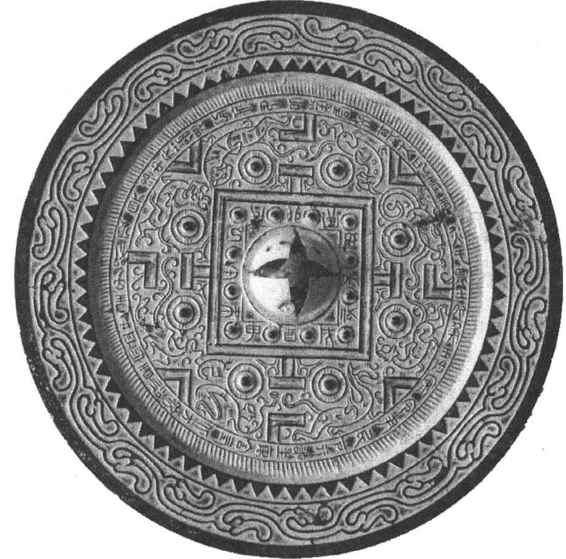
图24-13 汉代新兴辟雍镜
奁 圆形、长方形或多边形盒匣，有盖、子母口，内多分层或分间。主要为漆木制。流行于我国直至明清。它用于盛放梳妆用品，后发展成梳妆镜匣。在近十来年发掘的曾侯乙墓、云梦睡虎地秦墓、青川秦墓都有漆奁出土。在长沙烈士公园3号墓中，也出土一件漆奁，内盛木梳和山字纹铜镜。
燕器 燕，安也。《仪礼·既夕礼》“燕器：杖、笠、翣。”这里完全照搬古人的日杂器的分类名称。杖，即老人所拄之器。中国有敬老传统，汉代还由政府给80岁——后改为70岁以上老人发授王杖，其端饰鸠鸟形，铜、木为之，罕见有玉制者，故王杖又名鸠杖，出土实物中多有。翣指大扇，扇，汉时名便面。其制扇，叶在扇柄的一侧，圆形扇尚少见，此外，古籍所称“内具”的缝衣针，至汉代钢制品已有出土，甚或还有银针出土，收存针的针衣，针管和金、银、铜的顶针也均有实物出土。古剪，初为簧剪，剪刃间，并无固定的剪钮，剪刃的张合，全靠人手捏动8形的剪柄及其回弹的张力。我国古扇形状多样，用料则羽、竹、丝、牙、纸并用。王羲之、苏东坡等均有题扇、画扇的掌故流传，宋后折扇渐行，更提供了书画创作的新天地。现故宫藏明代大折扇，展开后，横152厘米，可称折扇王了，至于该扇的画、款、印也有非常重要的历史及艺术价值。
带具
鞶 束衣的大带。《说文》：“鞶，大带也。《易》曰：‘或锡之鞶带。’男子带鞶，妇人带丝。”晋陆云《吴故丞相陆公诔》有“鞶带翩纷，珍裘阿那”之句。阿那，今作婀娜。鞶又指腰带所悬之小皮囊。《礼记·内则》说：“男鞶革，女鞶丝。”注谓：“鞶，小囊盛帨巾者，男用韦，女用缯，有饰缘之。”《太平御览》引《曹瞒传》：“操性佻易，自佩小鞶囊，盛手中细物。”鞶，官吏也用以盛放印绶。《隋书·礼仪志》记载了不同品级的鞶囊，用不同质地的缕饰，而官无印绶者，不能佩鞶囊。《晋书·舆服志》还记述了“官不给鞶囊，得自具做”的情形。鞶还被用来缀系小铜镜，称为“鞶鉴”。
带钩 勾系束腰革带的器具。形似一条弯尾的小鱼，其尾即钩，以钩住皮带。大头的背面有带帽圆柱，以固定皮带的另一端。旧说带钩及皮带原是北方游牧民族的一种装束，春秋战国时期传入中原。战国中期更在南方普及。当时人或称“犀比”、“师比”、“私头”等。《楚辞·招魂》说：“晋制犀比，黄白日些。”其中“犀比”即带钩。带钩多为铜制，也有铁制、骨角制或宝玉制者，有的还加金银错、松石镶嵌。其形有棒形、月琴形、竹节形及各种动物形，制作多精美。由于近年来在中原地区发现了春秋中、晚期乃至西周晚期的带钩，它们早于古代北方民族的带钩，因此有人推断带钩可能是中原华夏族的发明。也可能各自发明而互有影响。带钩的使用一直延续到汉魏，至南北朝时期才逐渐消失。现今出土的带钩很多，如山东临淄郎家庄1号墓，发现铜带钩64枚，金带钩2枚。又如河南辉县出土的鎏金镶玉嵌琉璃银带钩，精美绝伦，堪称带钩中的珍品。
带头 带扣带。这是用于穿系腰带的一系列器具。带扣近似今时皮腰带头，唯其扣针及穿系方法与今不同。带头及带均为带端之及带身之饰件。晋唐时这种革带演化为鞢带，这个问题已属服饰范畴，兹略。
贮物器
笥 竹藤编制长方形扁箱。亦有苇制者，用盛衣物或饭食。称人“腹笥渊博”即喻其腹藏学识宏深。
篋 椭圆的笥，用贮衣物、书籍及财宝，《庄子》有《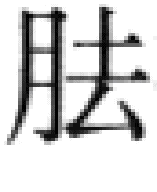篋》篇，篋，即从旁边打开箱笥，谓行窃。
贮钱器
扑满 为馒头形陶罐，上开小扁口，或制成动物形。《西京杂记》云：“扑满者，以土为器，以蓄钱，有入窍而无出窍，满则扑之。”至迟西汉时期，扑满已经流行。扑满又名缿。《说文》云：“缿，受钱器也，古以瓦，今以竹。”可知贮钱器还有竹制的但并未能取代陶质扑满。《说文稽古篇》谓：“今商家以长竹筒盛钱，夕则倒出而计之，即此物也。其制盖始于汉。”
云南晋宁石寨山出土过几件古滇人贮贝器，为青铜制，圆筒形，束腰，盖上有各种雕饰。双兽耳，平底有足。此为汉代滇族奴隶主收藏海贝的一种贮钱器。（图24—14）
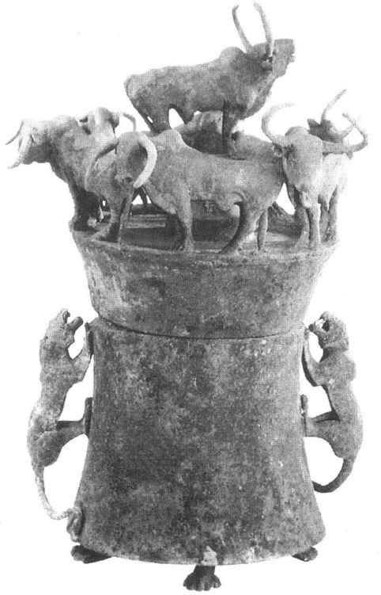
图24-14 云南晋宁石寨山出土七牛铜贮贝器
清洁卫生器
箕帚 早在原始社会即已有制作精致的各式箕帚了。例如浙江吴兴钱山漾出土的公元前3000年的簸箕，商代甲骨文中也有箕帚的象形字。古人将天星连缀像箕者，名之为“箕宿”。《诗·小雅·大东》：“维南有箕，不可以簸扬。”古箕有多种：箝箕，用以淘米；簸箕，用以簸扬；畚箕，用以盛物……。商周以来，还有一种铜铸的炭箕，底有网眼，用筛炭灰。古代箕帚之形制与今大体相同，这从有关箕帚的考古材料可以证明。隋代张盛墓出土的操箕女俑，正在碾旁进行簸扬，旁立一持铲女俑，是反映古代妇女劳动形象的作品之一。（图24—15）
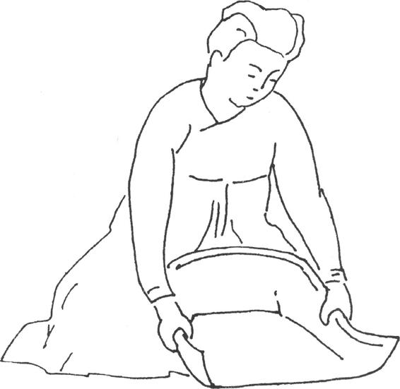
图24-15 河南安阳隋张盛墓出土持箕女俑
拂 俗称拂尘，一般以麈为之。麈即麈尾的省称，《名苑》云：“麈似鹿而大，其尾辟尘，群鹿随麈皆视其尾为准，故古之谈者挥焉。”［34］实际麈即麋鹿，俗称“四不像”。六朝文士即喜执麈而谈，以彰风雅，并寓指麾之意。欧阳修《和圣俞聚蚊》诗云：“抱琴不暇托，挥麈无由停。”直使麈谈之士手不停挥的情态，跃然纸上。麈不限文士使用，将帅亦或用之，据有的学者考证，诸葛亮所挥羽扇实即麈尾。《水浒全传》第七十六回记载童贯在阵前曾用玉柄麈尾指挥军队。至于贫士之拂，自然考究不得，或以棕，或以麻绳为之。后世则常以马尾为之，并常用于拂拭床几。
熏炉 炉身似桃形，下承柱足或人物造型，立于盘中。上有盖，镂作群山形。山间常铸神仙、人物、鸟兽之形，故曰博山炉。多为青铜制，亦有陶瓷制者。古人在炉中焚薰草（一种香草）等，以香熏家室。因此陕西茂陵无名冢出土的高足博山炉又自铭为熏炉。博山炉盛行于汉及魏晋。《艺文类聚》卷七十引汉刘向《熏炉铭》曰：“嘉此正器，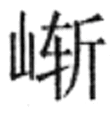岩若山；上贯太华，承以铜盘；中有兰绮，朱火青烟。”后世熏炉形制与此异，体大，多支足，而无博山，大者或兼用取暖。有时还需配备熏笼（专名为“篝”），用以熏衣巾。还有一种被卧用香炉，形如球，铜制，或鎏金、银。球面雕镂花孔，内设两层双轴相联的同心圆机环，内层之机环有双轴承以灰盂，以备焚香，球身百转，而灰盂永远保持平衡。1987年陕西扶风法门寺出土的这种熏炉，大如香瓜，是目前所见最大的熏炉，但已不是被中所用，而是悬挂室中的香熏。
唾盂 即痰盂，自汉迄至近代，流传不绝。漆木、陶瓷制，后者最多。大小盈捧。
行清 或作行圊，又名清器。《周礼·天官·玉府》“掌王之燕衣服、祍席、床笫，凡亵器”。郑注：“亵器、清器、虎子之属。”行清或称。《玉篇》曰：“，行圊也，木槽也。”《集韵》说：“ ，行清受粪函也。”《史记·万石君传》《集解》引苏林曰：“音投，贾逵解《周官》：‘楲，虎子也。窬，行清也。’”综上所述，可知行清犹后世之马桶。
，行清受粪函也。”《史记·万石君传》《集解》引苏林曰：“音投，贾逵解《周官》：‘楲，虎子也。窬，行清也。’”综上所述，可知行清犹后世之马桶。
虎子 即溲溺之器。漆、铜、陶、瓷多种质地，后者居多，后世俗称便壶。
古代日用器物自不限于上述各项，还有些大同小异或很少见的或太平常的，镊钳、日用容器、装具等，今不备述。